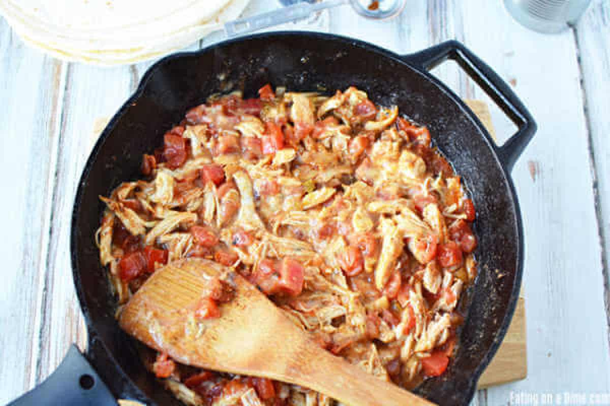
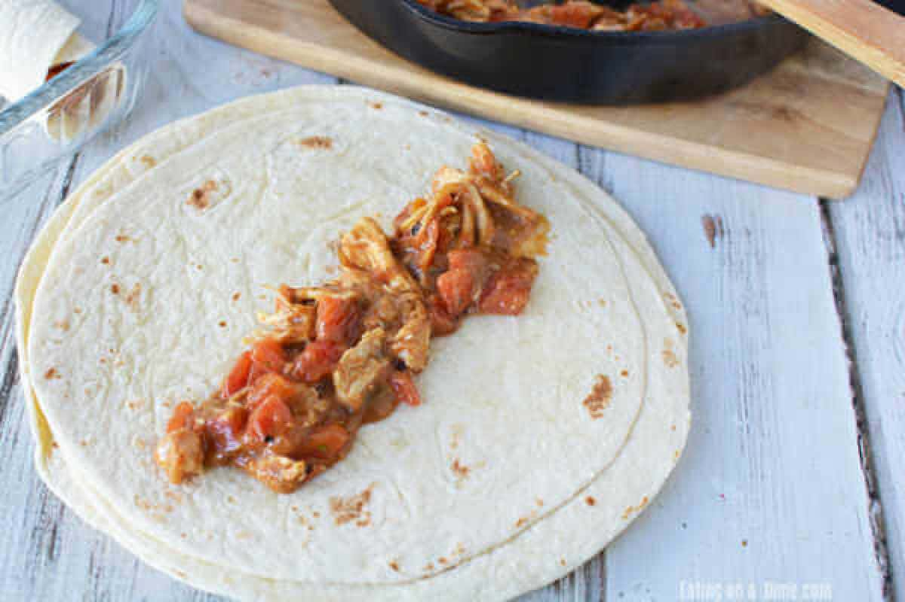
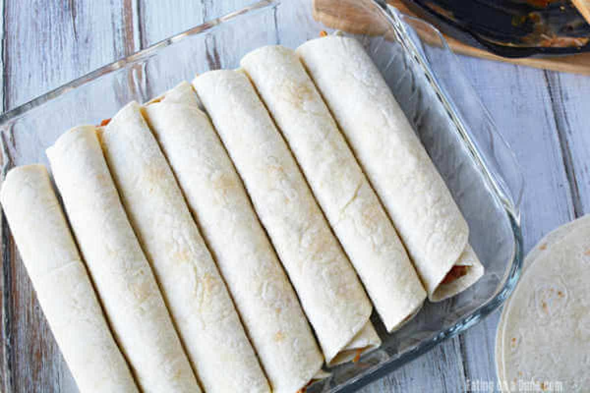
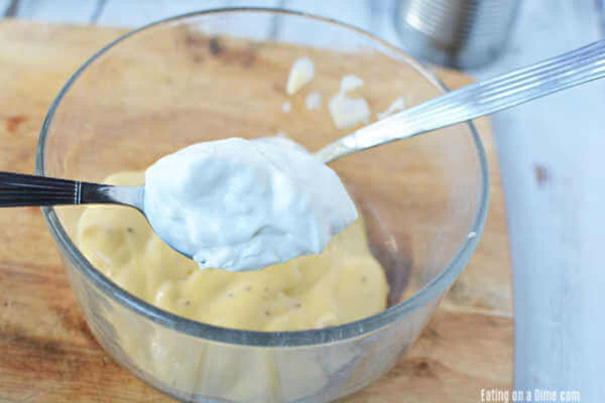

Add in the shredded chicken, taco seasoning, Rotel, and half the can
of cream of chicken soup.

Cook over medium high heat until mixed thoroughly and heated
through.
Spoon the chicken mixture evenly into the tortillas.

Roll and place in a 9x13 baking dish with the seam side down. If the
tortillas need to be more pliable, microwave them for 30 seconds.

Continue previous two steps until your pan is full.
Mix the remaining cream of chicken soup, sour cream, and milk in a
bowl until combined. If the sauce is too thick, add a small amount
of chicken broth to thin it out.

Pour sour cream mixture over your rolled tortillas. Sprinkle with
the shredded cheese on top.